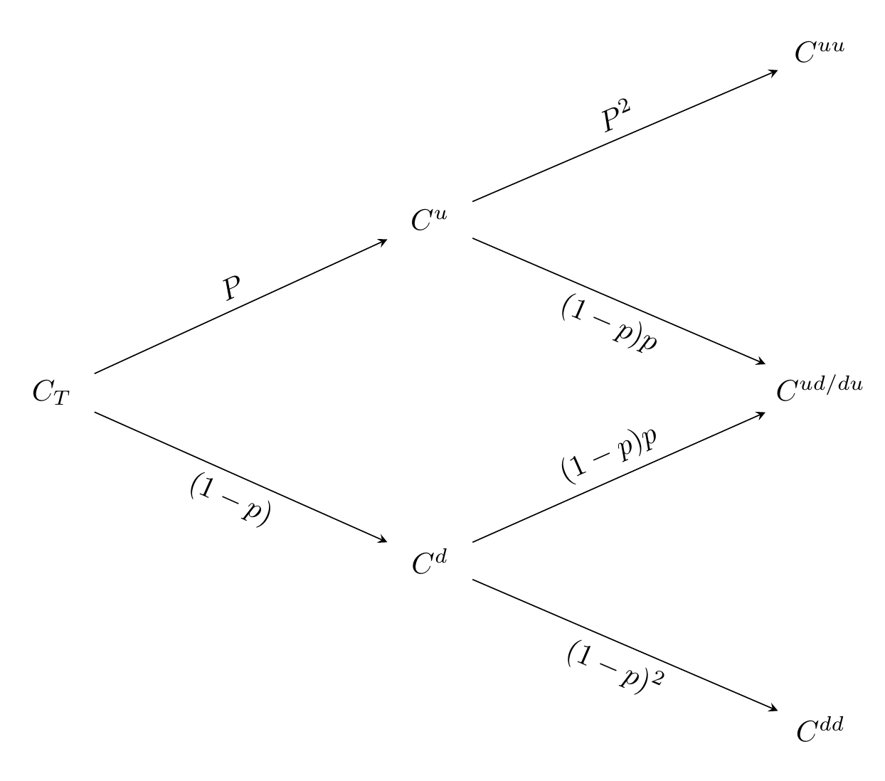

Financial Derivatives are securities that derive their value from cash markets. In Ingersoll’s definition, a financial contract is a derivative security.
Cash and Carry Markets: Gold, silver, T-bonds. The idea is to borrow cash, buy asset, and hold until expiration.
Forward Contract: obligation to buy/sell an asset at a specified price at a future date. if cash price is higher at expiration then forward, and long position make a profit.
| Characteristic | Futures | Forwards |
|---|---|---|
| Mark to Market | Yes | No |
| Settlement | Daily | Upon Maturity |
| Margin System | Yes | No |
| Trading | Exchanges | OTC |
| Types | Standardized | Custom |
| Flexibility | Less | More |
| Liquidity | More | Less |
| Counterparty Risk | Less | More |
Repurchase Agreement (REPO): A transaction in which one party sells a security in return for cash, with an agreement to repurchase the security at an agreed upon price at a future date.
Swaps: Exchange of one set of cashflows for another. Swaps are simultaneous and can involve curruncies, interst rates, etc. Swaps can be priced through forwards. Cancelable swaps allow the right to cancel swap contracts.
Arbitrage : Taking simultaneous positions so that it guarantees a riskless profit higher than the risk-free rate. Let \(d_{ij}\) be the number of units of account paid by one unit of security i in state j. Rows represent asset, columns represent state (interest, conflict, recession, etc…)
\[ \text{Asset Values} = S_T = \begin{bmatrix} S_1(t) \\ S_2(t) \\ \vdots \\ S_n(t) \end{bmatrix} \]
\[ D_t = \begin{bmatrix} d_{11} & d_{12} & \cdots & d_{1k} \\ d_{21} & d_{22} & & d_{2k} \\ \vdots & & \ddots & \vdots\\ d_{i1} & d_{i2} & \cdots & d_{ik} \end{bmatrix} \]
\[ \text{example of a 2 state portfolio with cash, security, and call}\\ \begin{bmatrix} (1+r\Delta) & (1+r\Delta) \\ S_1(t + \Delta) & S_2(t + \Delta) \\ C_1(t + \Delta) & C_2(t + \Delta) \end{bmatrix} \]
No arbitrage possibility exists iff:
\[ \begin{bmatrix} 1 \\ S(t) \\ C(t) \end{bmatrix} = \begin{bmatrix} (1+r\Delta) & (1+r\Delta) \\ S_1(t + \Delta) & S_2(t + \Delta) \\ C_1(t + \Delta) & C_2(t + \Delta) \end{bmatrix} \begin{bmatrix} \psi_1 \\ \psi_2 \end{bmatrix} \]
\(\psi_n\) represents the risk neutral probability discounted at the risk free rate and:
\[ \sum_i^n \psi_i = v = \frac{1}{1+r} \rightarrow \sum_i^n \psi_i \cdot (1+r) = \sum_i^n \bQ_i = 1 \]
\[ C_T = \frac{1}{1+r}[Q_{up} C_{t+\Delta}^{up} + Q_{down} C_{t+\Delta}^{down}] \]

If we assume dividends are paid as a % of \(S_{t+\Delta}\). Then by arbitrage: \[ \begin{bmatrix} 1 \\ S(t) \\ C(t) \end{bmatrix} = \begin{bmatrix} B^u_{t+\Delta} & B^d_{t+\Delta} \\ S^u_{t+\Delta} + d_tS^u_{t+\Delta} & S^d_{t+\Delta} + d_tS^d_{t+\Delta} \\ C^u_{t+\Delta} & C^d_{t+\Delta} \end{bmatrix} \begin{bmatrix} \psi_1 \\ \psi_2 \end{bmatrix}\\ E^Q[\frac{S_{t+\Delta}}{S}] = \frac{1+r\Delta}{1+d\Delta} \approx 1+(r-d)\Delta \\ E^Q[\frac{C_{t+\Delta}}{C}] = 1+r\Delta \] Under risk-neutral expectations. S grows below the risk free rate at r-d while the call option is expected to return r. For foreign currencies, replace d with the foreign savings interest rate rf.
Floating lookback call option payoff: \(\max{(S_T - S_{min}, 0)}\)
Fixed lookback call option payoff: \(\max{(S_{max}-kK,0)}\)
Has several thresholds, such that if the underlying price reaches these thresholds, the return of the option is locked in.
A down-and-in option gives its holder a European option if the spot price falls below a barrier during the life of the option. If the barrier is not reached, the option expires with some rebate as a payoff. The up-and-in option is similar but with the spot price going above the barrier price.
Kncok-out options are European options that expire immediately if the underlying asset price falls below a barrier during the life of the option The option pays a rebate if the barrier is reached. Also called down and out. There are also up-and-out variations.
| Example Payoff | \(F(S_{1T}, S_{2T}, T)\) |
|---|---|
| Multi-Asset Option | \(\max{[0, \max{(S_{1T},S_{2T})-K}]}\) |
| Spread Call | \(\max{[0, (S_{1T}-S_{2T})-K]}\) |
| Portfolio Call | \(\max{[0, (\theta_1S_{1T}+\theta_2S_{2T})-K]}\)1 |
| dual strike call option | \(\max{[0, S_{1T}-K, S_{2T}-K]}\) |
Interest Rate Forwards and Futures:
Forward Rate Agreements (FRA): As discussed in an earlier section, these instruments provide a more convenient way to hedge interest rate risk.
Caps and Floors:
| Instrument | Payoff | Gain When Interest Rates |
|---|---|---|
| Caplet | \(N \max{(\delta(L_{t_i} - R_{ ext{cap}}),0)}\) | Increase |
| Floorlet | \(N \max{(R_{ ext{floor}} - \delta(L_{t_i}),0)}\) | Decrease |
Interest Rate Swaps:
Bond Options
Swaptions
\(\theta_2 , \theta_2\) represents the weight of each asset in the portfolio.↩︎